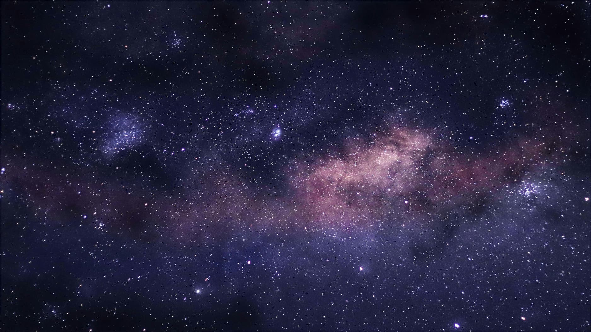

The Galaxy,
Within
Reach.
Experience Orbitarium - gesture-controlled 3D solar system. Touch the stars without a screen.
Planetary Data Link
Hand Control
Manipulate planetary bodies with natural hand movements in 3D space. No controllers, no gloves—just physical gravity at your fingertips.
Interactive Orrery
Explore a carefully crafted, stylized model of our solar system. Planetary scales and orbits are aesthetically tuned for fluid gestures, breathtaking visuals, and cinematic exploration.
Infinite Fidelity
Sub-millimeter detail on surface topography and atmospheric effects. 8K texture mapping of any celestial body.
